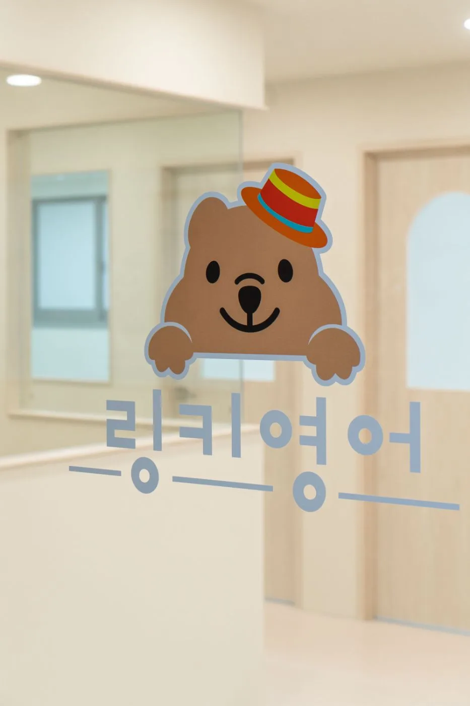
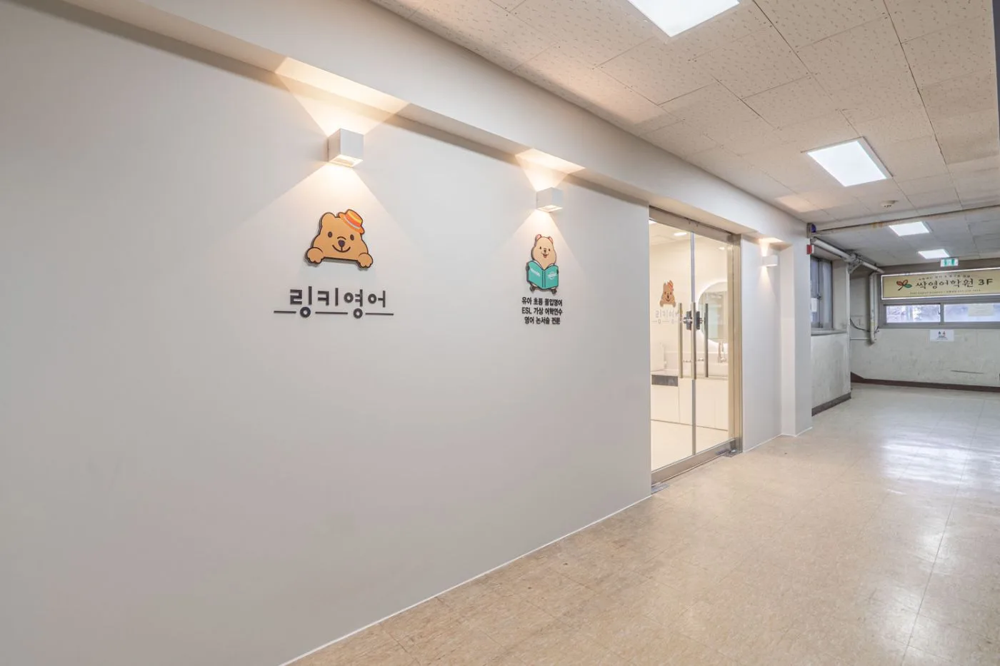
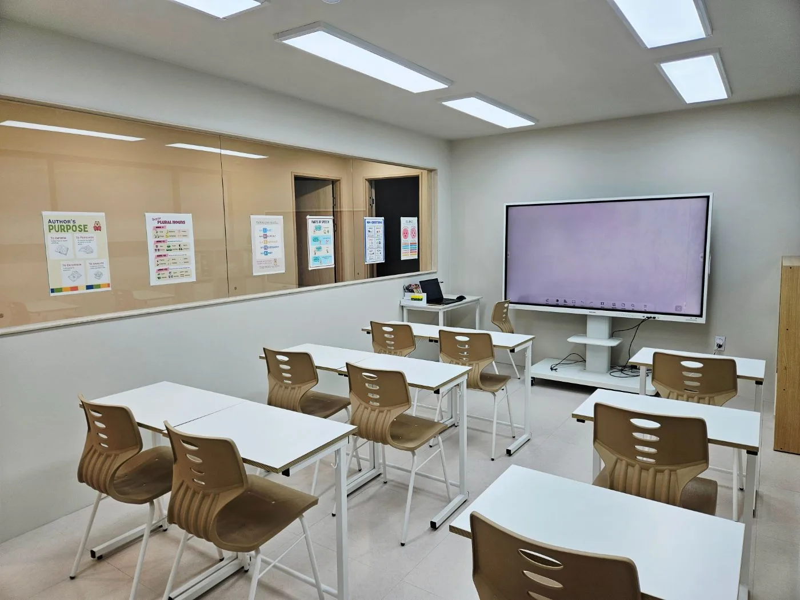
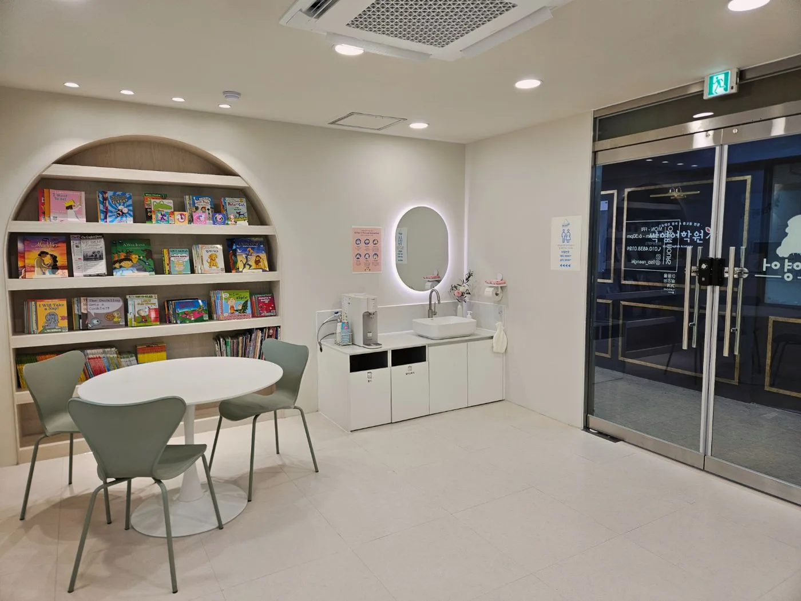

링키영어 인계매탄학원은 원장이 직접 아이들을 지도하는 유아·초등 전문 영어학원입니다. 성적보다 먼저, 아이가 스스로 다시 일어서는 힘과 영어에 대한 애정을 키우는 것을 교육의 중심에 둡니다.
링키영어 인계매탄학원의 원장은 20년간 영어교육 현장에서 유아부터 초등 고학년까지 다양한 연령의 아이들을 직접 지도해왔습니다. 커리큘럼 설계와 수업 진행은 물론, 학부모님과의 소통까지 원장이 직접 챙기며 아이 한 명 한 명의 성장 과정을 세심하게 관찰합니다.
단순히 시험 점수를 올리는 것이 아니라, 아이가 어려움을 마주했을 때 스스로 다시 도전하는 힘 — 즉 학습 회복력을 키우는 것을 교육철학의 중심에 두고 있습니다.
아이마다 영어를 받아들이는 속도는 다릅니다. 그래서 서두르지 않고 스토리, 역할극, 게임, 원서 읽기, 실제 영어 표현 활동으로 수업을 채웁니다. 영어를 외워야 하는 공부의 대상이 아니라, 아이가 직접 써 보는 언어로 경험하도록 지도합니다.




매 수업이 끝나면 그날의 학습 내용과 아이의 수업 모습을 리포트로 전달해 드립니다.
실제 발송된 데일리 리포트 예시입니다. 개인정보는 가렸어요.
매달 한 번, 아이의 학습 데이터를 기반으로 성장 과정을 구체적으로 정리해 안내해 드립니다.
실제 발송된 월간 성장 리포트 예시입니다. 개인정보는 가렸어요.
담임 선생님이 아이의 성장과 보완점을 카카오톡으로 직접 안내해 드립니다.
유치부 주 1회 · 초등부 월 1~2회
실제 발송된 카카오톡 피드백 예시입니다. 이름과 아이들 사진은 가렸어요.